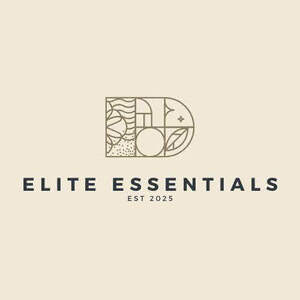

Trade Mark Journal No.2025/028 11 July 2025
UK00004225793 27 June 2025 (4,20,21,24)

- Class 4
- Candles; Candles and wicks for candles for lighting; Tealight candles; Votive candles; Scented candles; Wicks for candles; Candles for use as nightlights; Nightlights [candles]; Candles for lighting; Fragranced candles; Wicks for candles for lighting; Candles and wicks for lighting; Tallow candles; Candles in tins; Candle torches; Perfumed candles; Candles (Perfumed -); Soy candles; Christmas lights [candles]; Candles for use in the decoration of cakes; Table candles; Tea light candles; Church candles; Fruit candles; Floating candles; Aromatherapy fragrance candles; Beeswax for use in the manufacture of candles; Candles for night lights; Wax for making candles; Candle wax; Musk scented candles; Tealights; Grave candles, non-electric; Christmas tree decorations for illumination [candles]; Bougies in the nature of wax candles; Christmas tree candles; Candles (Christmas tree -); Christmas tree ornaments for illumination [candles]; Candles for absorbing smoke; Candle assemblies; Wicks for lighting; Special occasion candles; Wicks for oil lamps; Wax lights; Lamp wicks; Wicks (Lamp -); Wax for lighting; Tea lights; Candles containing insect repellent; Tapers for lighting; Wood shavings for lighting fires.
- Class 20
- Bedding for nursery cots [other than bed linen]; Bedding for cots [other than bed linen]; Beds, bedding, mattresses, pillows and cushions; Bedding, except linen; Bed mattresses; Bath pillows; Pillows; Beds; Bumper guards for cribs, other than bed linen; Mattresses; Furniture incorporating beds; Feather beds; Sofa beds; Bumper guards for cots, other than bed linen; Scented pillows; Beds for animals; Infant beds; Soft furnishings [cushions]; Bamboo pillows; Beds of wood; Nap mats [cushions or mattresses]; Futon mattresses [other than childbirth mattresses]; Furniture and furnishings; Storage boxes for pillows [furniture]; Sleeping mats for camping [mattresses]; Divan beds; Cushions [furniture]; Bunk beds; Bed slats; Nursery furniture; Beds for pets; Camping mattresses; Foam camping mattresses; Latex pillows; Bedroom furniture; Air pillows; Beds for household pets; Bathroom furniture; Foam mattresses; Straw mattresses; Mattress pads; Inflatable pet beds; Beds for birds; Furniture being convertible into beds; Maternity pillows; Furniture for bathrooms; Cat beds; Slatted furniture; Kitchen cupboards; Kitchen cabinets; Kitchen furniture; Kitchen dressers; Kitchen tables; Fitted kitchen furniture; Kitchen units; Bathroom cupboards; Kitchen dressers [furniture]; Bathroom cabinets; Wooden containers [other than for household or kitchen use]; Containers made of wood [other than for household or kitchen use]; Furniture for kitchens; Non-metallic containers [other than for household or kitchen use]; Cupboards for bedrooms; Kitchen display units; Height adjustable kitchen furniture; Non-metallic drums [other than for household or kitchen use]; Hangers [Coat -]; Chairs on skid frames; Furniture for house, office and garden; Pet houses; Non-metallic house numbers; Dog houses [kennels]; Bird houses; Living room furniture; Garden furniture; Fitted bedroom furniture; Furniture for motor homes; Lawn furniture; Furniture for use in rest rooms; Door furniture made of wood; School furniture; Furniture (School -); Bank furniture; Office furniture.
- Class 21
- Kitchen utensils; Household or kitchen utensils; Kitchen graters; Kitchen jars; Kitchen containers; Spatulas [kitchen utensils]; Kitchen mitts; Kitchen sponges; Kitchen sieves; Tenderizers [kitchen utensils]; Kitchen utensils of silicon; Turners (kitchen utensil); Moulds [kitchen utensils]; Molds [kitchen utensils]; Kitchen moulds; Household or kitchen containers; Bread-cases [for kitchen use]; Mixing spoons [kitchen utensils]; Spatulas for kitchen use; Graters for kitchen use; Presses (Garlic -) [kitchen utensils]; Garlic presses [kitchen utensils]; Ceramics for kitchen use; Egg separators [kitchen utensils]; Serving scoops [household or kitchen utensil]; Pestles for kitchen use; Kitchen mixers, non-electric; Kitchen paper racks; Defrosting trays for kitchen use; Tortilla presses, non-electric [kitchen utensils]; Containers for household or kitchen use; Turners for kitchen use; Kitchen paper dispensers; Kitchen grinders, non-electric; Aluminium moulds [kitchen utensils]; Toilet and bathroom cleaning utensils ; Scrapers (kitchen implements); Kitchen boards for chopping; Crushers for kitchen use, non-electric; Mortars for kitchen use; Cooking utensils; Basting spoons, for kitchen use; Spoons (Basting -), for kitchen use; Batter dispensers for kitchen use; Funnels for kitchen use; Cooking pots for use in microwave ovens; Griddles [cooking utensils]; Cutting boards for the kitchen; Kitchen cutting boards; Household utensils; Baking utensils; Dishes [household utensils]; Cooking utensils, non-electric; Graters [household utensils]; Basting spoons [cooking utensils]; Grills [cooking utensils]; Sieves [household utensils]; Cosmetic utensils; Trivets [table utensils]; Non-electric griddles [cooking utensils]; Griddles [non-electric cooking utensils]; Sifters [household utensils]; Cookware and tableware, except forks, knives and spoons; Utensils for household purposes; Wire baskets [cooking utensils]; Graters [non-electric household utensils]; Cooking utensils for barbecue use; Cosmetic and toilet utensils; Kitchen utensils, not of precious metal; Grills in the nature of cooking utensils; Tableware, other than knives, forks and spoons; Tableware, except forks, knives and spoons; Laundry balls for use as household utensils; Household utensils for cleaning, brushes and brush-making materials; Cookware, except forks, knives and spoons; Tableware, cookware and containers; Cooking utensils for use with domestic barbecues; Simmer rings [cooking utensils]; Stands for shaving utensils; Cutlery trays; Cinder sifters [household utensils]; Utensils for cosmetic purposes; Utensil jars; Cases adapted for toilet utensils; Skewers (cooking utensil); Dishware; Cookware [pots and pans]; Wooden chopping blocks [utensils]; Serving utensils [pastry servers]; Cooking pots and pans [non-electric]; Non-electric cooking pots and pans; Cookware; Bone china tableware [other than cutlery]; Tableware; Cases adapted for cosmetic utensils; Serving utensils [pie servers]; Crockery; Tumble drier balls [household utensils]; Cooking pans [non-electric]; Non-electric cooking pans; Plastic plates [dishes]; Cooking graters; Cooking pots [non-electric]; Cooking pans.
- Class 24
- Comforters (bedding); Quilted blankets [bedding]; Quilt bedding mats; Textile goods for use as bedding; Disposable bedding of textile; Bed linen and blankets; Comforters for beds; Linens; Textile fabrics for use in the manufacture of bedding; Bed clothes and blankets; Disposable bedding of paper; Crib bumpers [bed linen]; Bed blankets; Blankets (Bed -); Bed linen; Linen for the bed; Linen (Bed -); Cot bumpers [bed linen]; Canopies (bed linen); Silk bed blankets; Bed clothes; Ticks (mattress and pillow coverings); Bed blankets made of cotton; Valances for beds; Crib sheets; Bedsheets; Fabric bed valances; Bed coverings; Bedspreads; Household linens; Bed linen of paper; Valanced bed sheets; Coverlets [bedspreads]; Bath sheets (towels); Bed linen and table linen; Bed quilts; Fitted bed sheets; Textile piece goods for making bedding covers; Bed valances; Bath linen, except clothing; Duvets; Cot sheets; Cot blankets; Sofa blankets; Cotton blankets; Woven fabrics for use in the manufacture of clothing for use in clean rooms; Furnishing fabrics; Textile fabrics for use in the manufacture of beds; Bath linen; Silk fabrics for furniture; Bed sheets of plastic [not being incontinence sheets]; Bed sheets of plastic, not being incontinence sheets; Towels of textiles; Furnishing and upholstery fabrics; Infants' bed linen; Bed pads; Bed sheets of paper; Window furnishing fabrics; Fabrics for the manufacture of furnishings; Bed canopies; Protective loose covers for mattresses and furniture; Pillowcases; Bed blankets made of man-made fibres; Pillowcases [pillow slips]; Fire-retardant textile shower curtains; Bath sheets; Textiles for furnishings; Woven fabrics for furniture; Flat bed sheets; Bed linen made of non-woven textile material; Linen; Bathroom towels; Bedroom textile fabrics; Kitchen towels; Kitchen linen; Kitchen and table linens; Kitchen towels [textile]; Kitchen towels of textile; Kitchen towels of cloth; Towels [textile] for kitchen use.
Irem Nazir